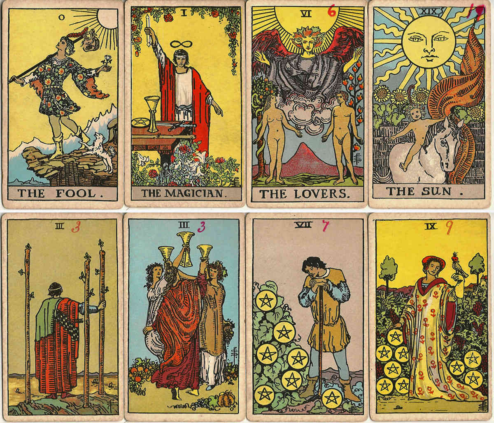

IHerzensmenschen
Kennst du dieses Muster?
Nähe. Dann Distanz. Dann wieder Nähe. Seit 20 Jahren begleite ich Menschen dabei, ihre Herzensverbindungen klarer zu verstehen.
Tarot & Herzensfragen seit 20 Jahren für dich da
Klarheit für deine
Entscheidungen
Antwort direkt von mir · diskret
Vier Wege

IHerzensmenschen
Nähe. Dann Distanz. Dann wieder Nähe. Seit 20 Jahren begleite ich Menschen dabei, ihre Herzensverbindungen klarer zu verstehen.
Dreiecksbeziehungen
Wenn zwischen zwei Menschen etwas Besonderes ist – aber eine dritte Person mit im Spiel ist, wird es schnell kompliziert. Seit 20 Jahren begleite ich Menschen bei genau solchen komplizierten Situationen.
Affären
Wenn aus einer unverbindlichen Verbindung plötzlich echte Gefühle werden, wird die Situation oft unübersichtlich. Seit 20 Jahren begleite ich Menschen dabei, solche Verbindungen klarer einzuordnen.
On-Off-Verbindungen
Kontakt. Nähe. Rückzug. Funkstille. Und irgendwann beginnt alles wieder von vorne. Wenn dir dieses Muster bekannt vorkommt, bist du bei genau diesem Thema richtig.
Diskret &
vertraulich
Ehrliche
Antworten
Intuitiv &
professionell
Für Frauen
und Männer
Dein nächster Schritt
Schreib einfach, was dich beschäftigt